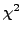

We will describe an algorithm for uncertainty quantification in inverse problems, and explore the solution of the resulting coupled nonlinear system of equations. Statistical interpretation of inverse problems allow for uncertainty quantification of parameter and state estimates. However, this can be expensive when the probability distribution of the parameters or state is estimated. Rather than estimating or assuming a specific probability distribution, the  method developed by the PI and colleagues only estimates the second moment, or variance. The challenge with this approach is that a nonlinear coupled system of equations, which includes calculation of the square root of a symmetric positive definite matrix, must be solved. The dimension of the system depends on the coarsness of the uncertainty estimates. For example, in one dimension the method accurately extends the Morov discrepancy principle which is often used to find a single regularization parameter. As the dimension of the nonlinear system increases, the regularization parameter becomes a matrix weight for the parameter, and is an estimate of its a priori inverse error covariance matrix. Results from the method on a hydrological application will be shown. We model spatial variability of soil moisture as measurement uncertainty in order to determine the scales over which one parameter set can be used.